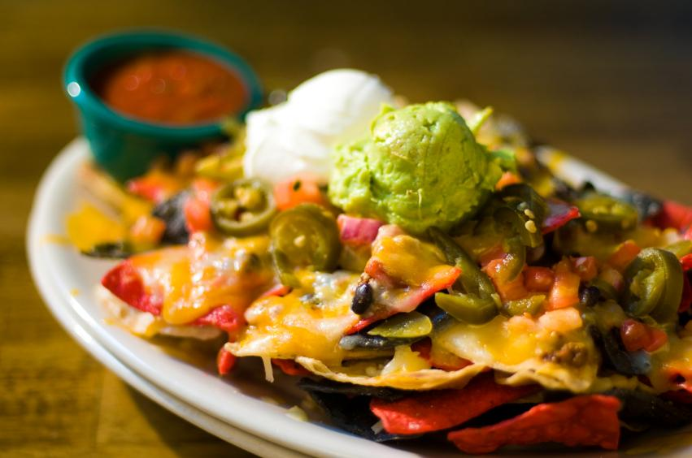
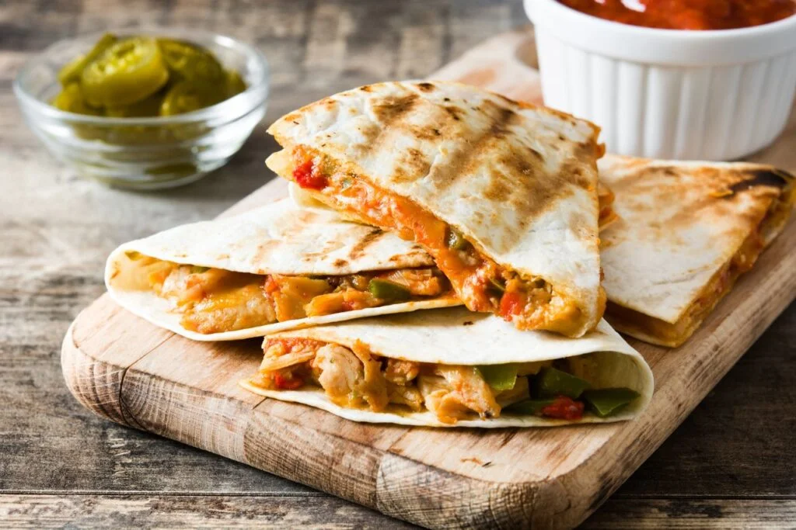
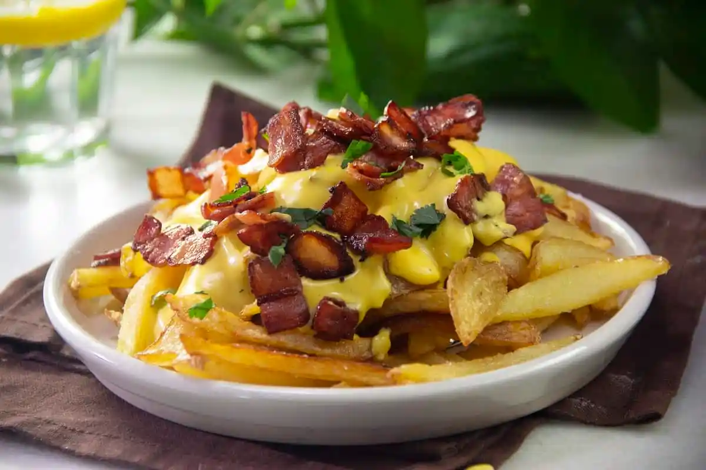
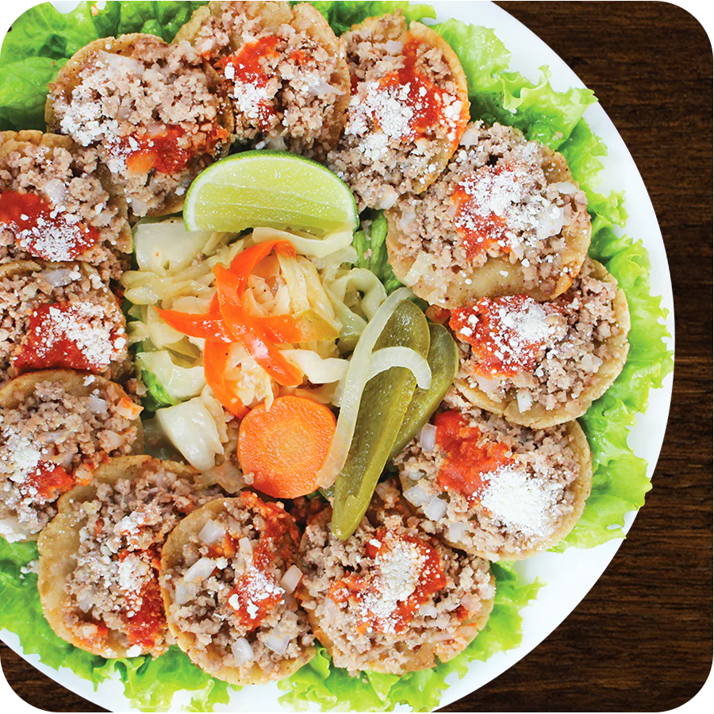

1. Tacos
Tortillas rellenas de carne, pollo o vegetales, acompañadas de salsas.
“Pequeños antojos que despiertan grandes placeres.”
Tortillas rellenas de carne, pollo o vegetales, acompañadas de salsas.
Nachos crujientes con queso derretido y complementos.


Tortillas rellenas de queso y otros ingredientes deliciosos.
Alitas crujientes con dos salsas diferentes (BBQ, picante).


Las papas fritas especiales contienen queso, tocino, salsa y aderezos variados.
Las garnachas llevan tortillas pequeñas con carne molida, salsa de tomate, repollo y queso.
